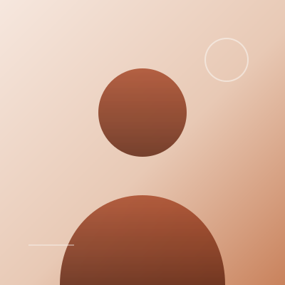

关于
在设计和技术之间
我在杭州做产品设计，同时也是一个愿意自己动手实现的前端开发者。过去几年里，我参与过从 0 到 1 的内部工具、面向消费者的 App，以及几套需要长期维护的设计系统。
我喜欢把复杂的问题收敛成简单的界面：信息层级清楚、交互有反馈、细节经得起反复使用。 写代码让我能在设计与实现之间少丢一点东西，也让讨论更具体。
工作之外，我读书、跑步、整理阅读笔记。这个站点就是我练习写作和记录的地方。
- 现居杭州
- 工作产品设计 / 前端
- 在做设计系统、数据可视化
- 写作每月一篇
联系
有想法，聊聊？
项目合作、设计咨询，或者只是打个招呼，都欢迎。我通常会在两天内回复。